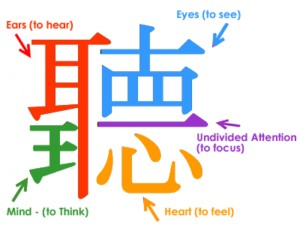
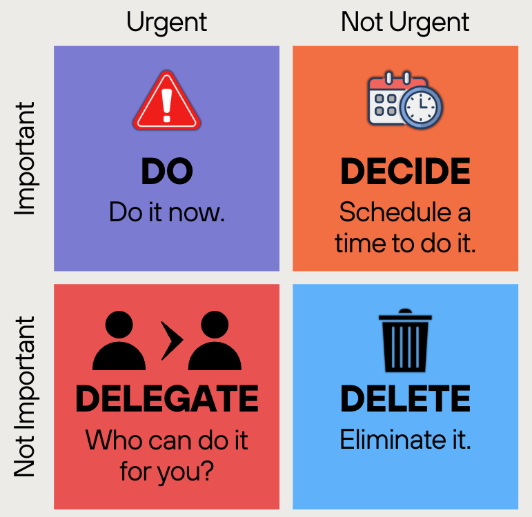

I once sat outside of a hotel lobby in Shanghai, staring at a single page of the Bible for twenty minutes. My mentor and I were reading the passage of Acts 17, trying to understand the experiences of Paul in Athens. The text was there, but the message was silent. It felt like a dead frequency.
Across from me, my mentor was uncovering layers of meaning I could not even see. He was seeing the architecture of a beautiful building, whereas I saw only a wall. I felt a familiar, suffocating thought: "Maybe I am just not built for this." In the midst of unwavering thoughts, my mentor said, "Read through it, seek understanding, and soon you will discover..."
Days went by, and wisdom upon wisdom started to unravel. And right he was, the discovery led to a path, a journey, a system, and an answer to what I had been searching for, and it all started with the intention to learn more and know more about the secrets that had been waiting to be found. Acts 17 is not merely talking about how to spread the gospel, but deeper than that, documenting the exact moment of a breakthrough. And it all starts with a heart of compassion.
Part I: The Heart of Compassion
-
1. Begin with Care (Acts 17:16): The first step of breakthrough in both Paul and the people of Athens comes with a heart full of compassion. It is the shift from "me-centered" to "other-centered." Paul was waiting and, while looking at the city, he grieved, knowing that the people were surrounded and bound by the "gods" during their search for God. It did not stop there; Paul moved on to seek a deeper understanding of the phenomenon surrounding him.
-
2. Raise the Conversation (Acts 17:17): Paul did not let the phenomenon go to waste. He raised the conversation with the people to understand what the problems were in their city. He did not stop at observation and move to isolation, but sought more information with noble intentions. Isolation is the enemy of change. Oftentimes, problems in our lives can be solved if we talk to our friends and mentors. We can never change something we have not first dared to define in the presence of others. In the same way, we can help others through a simple "how are you?" Let this be the starting engine, and like Paul, do not stop at a shallow level of information, but cultivate depth in understanding.
Part II: The Cultivation of Depth
-
3. Exchange Curiosity (Acts 17:18-20): Curiosity is the mechanism that converts shallow information into the understanding of knowledge. When Paul was discussing and researching the situation, some scoffers assumed that what he had to say was nonsense, while others were eager to know more from him and his teaching. Our assumptions and immature conclusions hinder us from understanding the truth that is waiting to transform us.
To exchange curiosity for assumption, we must move beyond the "shallow scan." We must learn the ancient art of Radical Listening. The Chinese character for "Listen" (聽) provides a blueprint for this breakthrough. It suggests that true understanding is a full-body listening calibration involving five distinct elements:
- The Ear (耳 - Er): The Primary Receiver Listening begins with the physical ear. But in a world of digital noise, the ear is often distracted. We are too distracted to compare the words with our own thoughts. Radical listening requires us to tune our ears to focus on tone, volume, and pace, not just words.
- The King / Mind (王 - Wang): Unconditional Regard and Respect To listen is like paying regard to a "King," which means putting aside our ego. It is the practice of unconditional positive regard. When Paul spoke in Athens, the scoffers assumed his words were nonsense because their "inner king" was already satisfied with their own wisdom. To truly listen, we must treat the speaker and the Word with reverence, acknowledging that they possess a truth we do not yet have.
- The Ten Eyes (十目 - Shi Mu): Scanning the Non-Verbal The "Ten Eyes" represent intensified observation. It is the ability to see the "why" behind the "what": watching subtle shifts in tone, non-verbal cues, and hidden pain or passion that words often fail to capture. Real listening involves seeing what is not being said.
- Undivided Attention (一 - Yi): The Power of One In a world of multitasking, undivided attention is a superpower. The horizontal line represents the "One": a singular focus that refuses to drift. It is the commitment to be fully present in this one moment, with this one person, or this one verse.
- The Heart (心 - Xin): The Emotional Processor Finally, the heart is the center of the system. This is where information becomes knowledge. It is the seat of empathy: the ability to feel what the other is feeling. When you listen with the heart, you are no longer just an observer; you are a participant in the truth.

Chinese "Listen" (聽) -
4. Allocate Time (Acts 17:21): The journey of cultivating depth begins with understanding, but it cannot end there. The people of Athens were masters of information, yet they remained strangers to transformation; they collected ideas like trophies but never lived them. They were the original doom scrollers.
Today, we are often tricked into believing that taking time is only for the unworthy and untalented. We forget that great things require a slow burn. Great things take time, so start the journey because patience is bitter, but its fruit is sweet.
To reach it, we must stop reacting to the urgent noise of the world and start protecting the important silence of our vision. Eliminate distractions that serve neither your growth nor your purpose. By allocating time to do the important things, we prepare the way to learn from others in a deeper way.

Protect the important, not just the urgent. -
5. Know Others Deeper (Acts 17:22-23): Paul demonstrates the ultimate loop for human connection. He did not just speak; he studied the core of the Athenian soul. He observed that they were deeply religious, yet their worship was an imitation of a truth they did not comprehend; they were building altars to a God they did not know.
Why should we bother to look this deeply into others? Because every person we meet is a complex masterpiece. To truly know someone is to recognize the threefold reality of their existence:
- The Splendour: They are created in the Imago Dei (Image of God). No matter how "lost" someone seems, there is a divine design, an original brilliance that is still present.
- The Sufferer: Every person carries the weight of a sufferer past. Each of us is living with wounds and the effects of life in a broken world. Seeing others through this lens fosters compassion, empathy, and service.
- The Sinner: We all live in a sinner present, a state where impulses often overwrite intentions, leaving us in desperate need of a Savior.
When we realize that every stranger is a blend of splendour, sufferer, and sinner, we stop judging and start learning. There is always hidden meaning in their story that can help calibrate our own. Like Paul, we do not seek to destroy the methods of others; we seek to understand them so we can point both them and ourselves toward the one true Truth.
Breakthrough is what people tend to seek, but few try to pursue. Let this not be you. Start small and start building now.
Crave Understanding: What is currently lacking in my life, why is it happening, and how can I improve?
Take Action: Choose 1 of the 5 points that have yet to be tried, and apply it for the next 48 hours.
Audit the Habits: Are your habits a "Fixed Life" or a "Growth Life"?
Breakthrough awaits, but it requires transformation of heart & deep understanding.